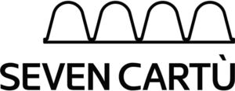

Trade Mark Journal No.2025/010 7 March 2025
WO0000001826230 (16,19,20,35,42)
Office of origin: Italy
Date of International Registration:25 July 2024
Date of designation in the UK:
25 July 2024

The trademark consists of an imprint depicting the wording SEVEN CARTÙ in fancy characters above which is placed a continuous undulating line resting on a horizontal line.
International priority date claimed: 13 May 2024
(Italy)
(302024000077098)
- Class 16
- Industrial paper and cardboard; packaging of paper or cardboard; paper and cardboard for packaging; packaging materials; wrapping paper; packaging materials of paper; packaging materials of cardboard; printed packaging materials of paper or cardboard; cardboard packaging boxes in made-up form; corrugated cardboard; corrugated cardboard boxes; millboard; airtight packaging of cardboard; shipping containers of cardboard; industrial packaging containers of paper or cardboard; cushioning or padding made of paper for packing purposes; packing [cushioning, stuffing] materials of paper or cardboard; bottle wrappers of paper or cardboard; packaging materials made from mineral-based paper substitutes; paperboard trays for packaging food; industrial packaging containers of paper; packaging containers of regenerated cellulose; bags [envelopes, pouches] of paper, for packaging; wrapping, packaging and storage bags and articles made of paper or cardboard; bottle envelopes of paper or cardboard; paperboard blanks; placards of paper or cardboard; works of art and figurines made of paper and cardboard, and architects' models; figures made of paper; 3D wall art made of paper; wall decorations of paper; tablemats of paper or cardboard; table place setting mats of paper or cardboard; decorative centerpieces of paper or cardboard; placemats of paper or cardboard; coasters of paper or cardboard; decorations of cardboard for foodstuffs; drawer liners of paper, perfumed or not; trash bags of paper; garbage bags of paper; paper and cardboard; printed matter; bookbinding material; photographs; stationery and office requisites, except furniture; adhesives for stationery or household purposes; drawing materials and materials for artists; paintbrushes; instructional and teaching materials; plastic sheets, films and bags for wrapping and packaging; printers' type, printing blocks.
- Class 19
- Sheathing boards, not of metal; wall panels, not of metal; roof flashing, not of metal; angle irons, not of metal; wainscotting, not of metal; building paper; paperboard for building; plasterboard; cornices, not of metal; materials, not of metal, for building and construction; rigid pipes, not of metal, for building; asphalt, pitch, tar and bitumen; transportable buildings, not of metal; monuments, not of metal.
- Class 20
- Loading pallets, not of metal; crates and pallets, non-metallic; industrial packaging containers of wood; camping mattresses; mats for infant playpens; sleeping pads; sink liners; footstools; storage drawers [furniture]; picture frames of paper or cardboard; shelves of paper and cardboard; occasional tables; occasional tables of paper and cardboard; decorative tables; decorative tables of paper and cardboard; display stands for merchandise of paper or cardboard; storage baskets [furniture]; non-metallic containers in the form of bins; furniture, mirrors, picture frames; containers, not of metal, for storage or transport; unworked or semi-worked bone, horn, whalebone or mother-of-pearl; shells; meerschaum; yellow amber.
- Class 35
- Retail services, online retail services and wholesale services in relation to industrial paper and cardboard, packaging of paper or cardboard, paper and cardboard for packaging, packaging materials, wrapping paper, packaging materials of paper, packaging materials of cardboard, printed packaging materials of paper or cardboard, cardboard packaging boxes in made-up form, corrugated cardboard, corrugated cardboard boxes, millboard, airtight packaging of cardboard; Retail services, online retail services and wholesale services in relation to shipping containers of cardboard, industrial packaging containers of paper or cardboard, cushioning or padding made of paper for packing purposes, packing [cushioning, stuffing] materials of paper or cardboard, bottle wrappers of paper or cardboard, packaging materials made from mineral-based paper substitutes, paperboard trays for packaging food; Retail services, online retail services and wholesale services in relation to industrial packaging containers of paper, packaging containers of regenerated cellulose, bags [envelopes, pouches] of paper, for packaging, wrapping, packaging and storage bags and articles made of paper or cardboard, bottle envelopes of paper or cardboard, paperboard blanks, placards of paper or cardboard, works of art and figurines made of paper and cardboard, and architects' models, figures made of paper, 3D wall art made of paper; Retail services, online retail services and wholesale services in relation to wall decorations of paper, tablemats of paper or cardboard, table place setting mats of paper or cardboard, decorative centerpieces of paper or cardboard, placemats of paper or cardboard, trivets of paper or cardboard, coasters of paper or cardboard, decorations of cardboard for foodstuffs, drawer liners of paper, perfumed or not, trash bags of paper, garbage bags of paper; Retail services, online retail services and wholesale services in relation to sheathing boards, not of metal, wall panels, not of metal, roof flashing, not of metal, angle irons, not of metal, wainscotting, not of metal, building paper, paperboard for building, plasterboard, cornices, not of metal; Retail services, online retail services and wholesale services in relation to loading pallets, not of metal, crates and pallets, non-metallic, industrial packaging containers of wood, packaging containers not of metal, protective containers of non-metallic materials for packing goods, furniture and furnishings of paper and cardboard, camping mattresses, mats for infant playpens; Retail services, online retail services and wholesale services in relation to sleeping pads, sink liners, footstools, storage drawers [furniture], storage boxes [furniture], picture frames of paper or cardboard, shelves of paper and cardboard, occasional tables, occasional tables of paper and cardboard, decorative tables, decorative tables of paper and cardboard, display stands for merchandise of paper or cardboard, storage baskets [furniture], non-metallic containers in the form of bins; presentation of goods on communication media, for retail purposes; commercial information and advice for consumers in the choice of products and services; sales promotion for others; administrative processing of purchase orders; on-line ordering services; advertising, marketing and publicity services; consumer research; providing information and advice to consumers regarding the selection of products and items to be purchased; organization of events, exhibitions, fairs and shows for commercial, promotional and advertising purposes; business assistance, management and information services; organization of exhibitions and trade fairs for commercial or advertising purposes; publicity and sales promotion services; dissemination of advertising for others via an on-line electronic communications network; provision of information and advisory services relating to e-commerce; advertising; business management, organization and administration; office functions.
- Class 42
- Packaging design services; packaging design; design of packaging and wrapping materials; information and consulting services relating to the design of packaging and wrapping materials; product design; design of products; product development; product research; product testing; material testing; industrial design; illustration services [design]; industrial research, development and testing; quality control testing of products; conducting of quality control tests on goods and services; testing, analysis and evaluation of the goods of others for the purpose of certification; research laboratory services; laboratory testing; industrial research; consumer product safety testing; scientific and technological services and research and design relating thereto; industrial analysis, industrial research and industrial design services; quality control and authentication services; design and development of computer hardware and software.
GRIFAL S.P.A.
Representative: Dr. Modiano & Associati SpA, Via Meravigli, 16 , I-20123 Milano, ITALY